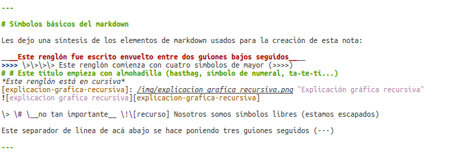

Creando artículos en Nikola
Hoy les presentamos nuestro primer post recursivo.
Cómo crear un artículo para el blog de bitson
Ingredientes:
- pipenv (Para más información ver la guía Empezando con pipenv)
- GitHub Pages
- Markdown como lenguaje de marcado

Sin más preámbulo, dejo la receta a continuación...
Configurando el entorno pipenv
Primero, nos aseguramos de tener pipenv instalado. Resulta práctico disponer del comando pipenv desde cualquier ruta, por lo que sugerimos agregar la ubicación de la misma a la variable de entorno PATH en el archivo .bashrc (.zshrc, o el que corresponda al shell que usen). Para saber dónde está ubicado pipenv podemos ejecutar el siguiente comando desde la consola:
which pipenv
/home/nespino/.local/bin/pipenv
Por lo que la línea de código para agregar pipenv al PATH sería:
export PATH=$PATH:~/.local/bin
Clonando nuestro repositorio de GitHub Pages
Una vez configurado el entorno pipenv, procedemos a clonar el repositorio donde se alojan todas las entradas de nuestro blog.
git clone https://github.com/bitson/bitson.github.io.git
No necesitamos permisos especiales para clonarlo, pero no podremos subir el nuevo contenido del blog sin estar debidamente autorizado.
IMPORTANTE
Debemos usar la rama src, en donde tenemos disponible los archivos necesarios para instalar Nikola y todas los artículos del blog.
git checkout src
Instalando Nikola
Dentro del mismo, en la carpeta bitblog se encuentra el archivo Pipfile, que es el que nos permitirá instalar Nikola a través del siguiente comando en consola:
pipenv --three install
El parámetro --three indica que vamos a usar la versión 3 de Python. En caso de omitirlo, usaremos la versión que esté configurado por defecto en nuestro sistema.
Nota: Es posible las dependencias que tengamos en el sistema choquen con las que están declaradas en el archivo Pipfile.lock. En ese caso, podemos ignorar este archivo durante la instalación usando el comando:
pipenv --three install --skip-lock
Otra nota:
Es posible que el instalador de pipenv nos devuelva la siguiente advertencia:
Warning: Your Pipfile requires python_version 3.6, but you are using 3.5.2 (/home/n/./b/bin/python).
$ pipenv check will surely fail.
No es algo de qué preocuparse.
Instalación en curso...
Virtualenv location: /home/nespino/.virtualenvs/bitblog-Dccxvb6W
Installing dependencies from Pipfile...
üêç ‚ñâ‚ñâ‚ñâ‚ñâ‚ñâ‚ñâ‚ñâ‚ñâ‚ñâ‚ñâ‚ñâ‚ñâ‚ñâ‚ñâ‚ñâ‚ñâ‚ñâ‚ñâ‚ñâ‚ñâ‚ñâ‚ñâ‚ñâ‚ñâ‚ñâ‚ñâ‚ñâ‚ñâ‚ñâ‚ñâ‚ñâ‚ñâ 1/1 ‚Äî 00:01:23
To activate this project's virtualenv, run the following:
$ pipenv shell
¡Éxito! Sólo nos falta verificar que Nikola esté funcionando correctamente.
pipenv run nikola auto
En mi caso, al ejecutar ese comando recibo un Traceback que termina en
OSError: [Errno 98] La dirección ya se está usando
Lo que significa que el puerto usado por defecto (8000) está ocupado. Para especificar el puerto a usar basta con agregar -p
➜ bitblog git:(src) ✗ pipenv run nikola auto -p 8001
Scanning posts........done!
[2018-02-16T20:03:24Z] INFO: auto: Watching files for changes...
[2018-02-16T20:03:24Z] INFO: ws4py: Using epoll
[2018-02-16T20:03:24Z] INFO: auto: Serving HTTP on 127.0.0.1 port 8001...
[2018-02-16T20:03:24Z] INFO: ws4py: Managing websocket [Local => 127.0.0.1:8001 | Remote => 127.0.0.1:56708]
[2018-02-16T20:03:24Z] INFO: auto: <--- {'command': 'hello', 'protocols': ['http://livereload.com/protocols/official-6', 'http://livereload.com/protocols/official-7'], 'snipver': 1, 'ver': '2.2.1'}
[2018-02-16T20:03:24Z] INFO: auto: ---> {"command": "hello", "protocols": ["http://livereload.com/protocols/official-7"], "serverName": "nikola-livereload"}
[2018-02-16T20:03:24Z] INFO: auto: <--- {'command': 'info', 'plugins': {'less': {'version': '1.0', 'disable': False}}, 'url': 'http://localhost:8001/'}
[2018-02-16T20:03:24Z] INFO: auto: ** Browser connected: http://localhost:8001/
[2018-02-16T20:03:24Z] INFO: auto: ** sending 0 pending messages
Voilá!
Nikola está listo para ser usado. Para ver el estado actual del blog, ingresar a http://localhost:8001/ y buscar esta misma entrada. Todo este procedimiento para llegar al tan deseado momento...
Creando artículos en Nikola
Antes de crear una nueva entrada, es muy importante tener el blog local actualizado, para no perder los últimos cambios ni generar conflictos con las ramas. Para esto basta con ejecutar:
git pull
Ahora sí, para crear una nueva entrada en el blog, nos posicionamos en el directorio bitblog y ejecutamos:
pipenv run nikola new_post -f markdown
Sin desperdiciar un segundo, Nikola nos pedirá un título para el artículo...
Creating New Post
Title: Creando artículos en Nikola
Scanning posts........done!
[2018-02-16T19:10:50Z] INFO: new_post: Your post's text is at: posts/creando-articulos-en-nikola.md
➜ bitblog git:(src) ✗ ls
Con el parámetro -f markdown estamos especificando que el formato de marcado será Markdown. Si no lo especificamos, Nikola usará por defecto reStructuredText reStructuredText, Markdown, Jupyter (IPython) Notebooks y HTML, entre otras.
Nota: El mismo blog de Nikola creado con Nikola tiene una nota sobre el rendimiento del Markdown con respecto a otros lenguajes de formateo.
Estamos listos para redactar la publicación...
Your post's text is at: posts/creando-articulos-en-nikola.md
Abrimos el archivo que Nikola nos generó automáticamente y podemos ver que incluye un encabezado donde principalmente podemos:
- Cambiarle fecha y título a la entrada
- Agregarle tags separados por coma y definirle categorías
- Agregar una descripción
- Declarar quién es el autor
Para esto último, alcanza con agregar la línea .. author: @nespino al final del encabezado. Lo que debería quedar algo similar a:
<!--
.. title: Creando artículos en Nikola
.. slug: creando-articulos-en-nikola
.. date: 2018-02-16 16:10:50 UTC-03:00
.. tags: nikola, blog
.. category:
.. link:
.. description: Cómo crear un artículo para el blog de bitson con Nikola
.. type: text
.. author: @nespino
-->
Escribe tu publicación aquí.
De acá en adelante es fácil. Escribimos la entrada y guardamos el archivo.
INFO: auto: Watching files for changes...
Nikola nos informa que cada vez que el contenido se modifique, el servidor local intentará reiniciar, reflejando los cambios en el navegador.
Símbolos básicos del markdown
Les dejo una síntesis de los elementos de markdown usados para la creación de esta nota:
_Este renglón fue escrito envuelto entre dos guiones bajos seguidos_
>>>> Este renglón comienza con cuatro símbolos de mayor (>>>>)
# Este título empieza con almohadilla (hasthag, símbolo de numeral, ta-te-tí...)
Este renglón está en cursiva

> # __no tan importante__ ![recurso] Nosotros somos símbolos libres (estamos escapados)
Este separador de línea de acá abajo se hace poniendo tres guiones seguidos (---)
Insertando imágenes
Para agregar imágenes a nuestra publicación podemos hacerlo a través de su URL accesible desde internet o bien copiando la imagen a la carpeta:
bitblog/files/img/ejemplo.png
De esta manera podremos declararla usando el siguiente formato:
[identificador-del-recurso-de-imagen]: /img/ejemplo.png "Título de la imagen"
Esto es, el identificador de la imagen entre corchetes, seguido de dos puntos, la URL de la imagen (que en este caso empieza con / porque saldrá de la carpeta files/img/ previamente cargada en nuestro repositorio de GitHub Pages) y entre comillas el título de la imagen, el que aparecerá al posicionar el cursor del mouse sobre la misma.
Una vez que tengamos esta declaración (que no generará nada por pantalla) podremos insertar la imagen cuantas veces queramos, con un ! seguido de las palabras alternativas entre corchetes, y pegado al identificador de la imagen entre corchetes, como muestra la siguiente línea:
![description alt imagen asistencia discapacidad visual yapa optimiza seo][identificador-del-recurso-de-imagen]
Aplicando los cambios
Una vez que hayamos terminado de redactar la nota y verifiquemos que se vea correctamente, sólo debemos ejecutar el comando:
pipenv run nikola github_deploy
lo que subirá los cambios al repositorio en la rama src y GitHub Pages se encargará de mostrarlo en la dirección que tengamos configurada.
[2018-02-19T15:58:09Z] INFO: github_deploy: Successful deployment
¡Éxito!
PD: Hallazgos completamente inútiles aparecidos durante la redacción de la nota
-
guthub.com redirecciona a github.com
-
Animate a ejecutar pipenv --jumbotron
Comentarios
Comments powered by Disqus